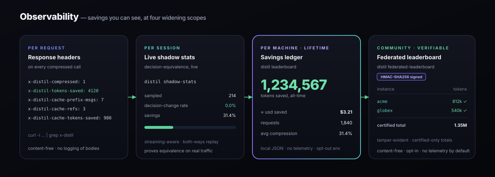

Architecture Overview
Distil is a cost-optimized cache hierarchy with a statistical quality contract. Six components, one invariant: the agent makes the same decisions on compressed context as on the original — provably, not heuristically.
Interactive — click any block to open the concept or technique behind it.
Observability — savings you can see
Distil surfaces savings at four widening scopes — each one verifiable, none requiring that any prompt or response content leave your machine.

- Per request — response headers (
x-distil-tokens-saved,x-distil-cache-prefix-msgs, …). - Per session —
distil shadow-stats(live decision-change rate) and thedistil gatewaydashboard. - Per machine, lifetime —
distil leaderboardrolls up the local savings ledger (~/.distil/savings.jsonl);--htmlexports a page. - Community, verifiable —
distil federated-leaderboardaggregates HMAC-signed, content-free, tamper-evident savings across instances; only certified submissions count, and sharing is opt-in (no telemetry by default).
Cache-aware prefix stability
Module: compress/cache_aware.py · compress/stabilize.py
The dominant cost in a multi-turn agent loop is not context size — it is cache miss rate. A cache read costs ~0.1× fresh input price; a naive compressor that rewrites the context each turn destroys the prefix match and loses that discount on every turn. The result: naive recompression sends fewer tokens yet costs more than not compressing at all (measured: −11% vs. the baseline on an SRE trajectory).
Distil models this explicitly. Two lossless pre-processing steps keep the prefix byte-stable before any compression runs:
- Schema canonicalization — recursively sorts JSON object keys so semantically identical payloads hash identically and keep hitting the cache regardless of key-insertion order.
- Volatile-field extraction — timestamps, UUIDs, JWT tokens, and request IDs are lifted out of the stable prefix into the volatile tail. The stable portion stops churning; the tail is compressed separately.

The tier model
Every compression operation is assigned to a tier based on its loss profile. Higher tiers require stronger evidence before they are permitted.
Provably lossless
Reconstructable by construction — no stored state required. Applied unconditionally to every block.
- JSON minification — strips whitespace from valid JSON payloads; semantics unchanged.
- Run-length collapse — replaces repetitive lines and separators with a compact form.
- Reject-if-bigger — a transform that would grow the content is a no-op.
Module: compress/tier0.py
Decision-aware digest
Large tool results (≥ 6 lines) are replaced with a compact digest. The original is kept in a RestoreStore keyed by an 8-hex SHA-256 content handle.
- The handle is embedded inline — re-expansion is always possible.
- BM25 partial retrieval lets the agent query the original without full re-expansion.
- Reject-if-bigger also applies.
Module: compress/tier1.py
Lossy strategies
Pruning and aggressive rewriting are applied only at ratios the DERC gate certifies. A strategy that fails the gate is blocked — it does not ship.
- Causal ablation discovers inert blocks before any pruning runs.
- Subscription / OAuth sessions are locked to lossless-only.
- Non-zero exit code on gate failure.
Gate: certify/gate.py
The measure → discover → certify loop
Step 1 — Measure
The cache-aware cost engine (compress/cache_aware.py) simulates the full multi-turn loop with four variants: baseline (no cache, no compress), cache-only, naive compress + cache, and Distil. It computes per-turn cost breakdowns — cache reads, cache writes, fresh tokens — and reports the total dollar cost of each strategy. Run distil savings to see the numbers on any trajectory.
Step 2 — Discover
The causal ablation engine (replay/ablation.py) is not a ruler bolted to compression — it is a discovery engine. For each context block, it removes the block, replays the trajectory, and records whether any decision changed. The output is a per-block verdict: causally inert (safe to prune) or decision-driving (must be kept). This step produces the compression policy; it does not assume one.
$ distil prune causal ablation over 'sre-disk-incident' — what is free to drop? block occ tokens verdict doc-0 4 312 PRUNE (causally inert) doc-1 4 303 PRUNE (causally inert) obs-0 4 234 keep (changed a decision) obs-1 4 198 keep (changed a decision) system 4 218 keep (changed a decision) tokens provably free to drop: 615 across 2 block(s).
Step 3 — Certify
The conformal DERC certificate (certify/stats.py via certify/gate.py and conformal.py) computes the decision-change rate across all turns and certifies it. The implementation uses Learn-Then-Test with Hoeffding–Bentkus p-values — distribution-free, valid at finite sample size, zero scipy/numpy. The guarantee: P(R(λ̂) ≤ α) ≥ 1 − δ.
A certified strategy has its policy registered in the compress registry. A failing strategy is rejected and produces a non-zero exit code from distil certify and distil bench.
$ distil certify --strategy distil decision-equivalence match rate: 100.0% TOST non-inferiority (margin=0.02, alpha=0.05): mean diff=+0.000, p=0.0000 VERDICT: PASS (certified non-inferior) $ distil certify --strategy aggressive decision-equivalence match rate: 0.0% TOST non-inferiority (margin=0.02, alpha=0.05): mean diff=−1.000, p=1.0000 VERDICT: FAIL (NOT certified — would degrade quality)
The DERC certificate
Module: distil/conformal.py
DERC — the Decision-Equivalence Risk Certificate — is the conformal certificate that gates every lossy strategy. It answers one question: is this compression level's decision-change rate provably bounded at α with confidence 1 − δ?
Decision-change rate
The loss on a turn is 1 iff the agent's {action, target} changes versus the uncompressed context. R(λ) is the mean over calibration turns. We certify the most aggressive compression level λ̂ whose risk is controlled at α.
Learn-Then-Test / CRC
Learn-Then-Test (Angelopoulos et al., Ann. Appl. Stat. 2025) with Hoeffding–Bentkus p-values: finite-sample, distribution-free, no monotonicity assumed. Conformal Risk Control (Angelopoulos et al., ICLR 2024) bounds the expected rate to O(1/n).
P(R(λ̂) ≤ α) ≥ 1 − δ
With default settings (α = 0.05, δ = 0.05), the certificate bounds the live decision-change rate to ≤ 5% with 95% confidence. The benchmark result: 0% live decision-change rate, certified on claude-opus-4-8.
Exchangeability
The guarantee holds for the distribution you calibrated on. Under distribution shift — a new agent, a prompt change, a workload drift — recalibrate on a rolling window of recent traffic. The bound is real, not magic.
Salience protection
Module: compress/salience.py · codec/keep_model.py
The salience layer is a model-free safety net that runs before the DERC gate, not instead of it. It protects content the gate might not have seen enough of to certify. The default is SalienceKeepModel — a deterministic rule-set that forces a keep score of 1.0 on decision markers (DECISION:), error keywords, structured data, and high digit-density lines. No model in the path, no training step required.
Because it only ever widens the set of blocks kept, salience protection is strictly conservative relative to the DERC certificate — it shifts the safe frontier further out, never closer in. The logistic keep-model (codec/learned.py) improves on the rules via a zero-dependency, pure-Python logistic classifier that ships in the wheel.
Byte-fidelity invariants
Module: distil/fidelity.py · Gate: distil verify
Two structural invariants are enforced across the entire corpus by the verify gate:
Reversibility
Every original block is recoverable — either because the compressed text is byte-identical to the original, or because the original lives in the local restore table (keyed by block ID for Tier-0, by content handle for Tier-1). Recovery is confirmed via SHA-256 equality: auditable and machine-checkable.
Append-only history
A block ID that appears in two consecutive turns must carry identical bytes. Mutating a previously-seen block ID is a violation. This invariant is what makes the prefix cache hit rate reliable — the cache cannot be invalidated by history rewriting.
Numeric precision
JSON canonicalization must not lose numeric precision. numeric_precision_preserved() confirms that the original and transformed strings parse to the same JSON value.
$ distil verify byte-fidelity gate — reversibility + append-only across the corpus sre-disk-incident reversible + append-only: ok coding-bugfix reversible + append-only: ok support-refund reversible + append-only: ok research-synthesis reversible + append-only: ok data-analysis-sql reversible + append-only: ok devops-rollback reversible + append-only: ok finance-reconcile reversible + append-only: ok FIDELITY: PASS — Tier-0/1 byte-reversible and history append-only across the corpus.
Sub-millisecond inline proxy
Module: distil/proxy.py · distil/native.py
Distil compresses at ~0.026 ms/turn — roughly 1,000× faster than model-based compressors (LLMLingua-2: ~1,480 ms/turn; Headroom: ~26 ms/turn). The reason: there is no model in the path. Tier-0/1 transforms are pure string operations; the causal ablation cache is populated offline. The hot path runs on stdlib-only Python with an optional Rust extension (distil/native.py, rust/distil-core) for JSON minification and run-length encoding when the wheel is built.
This is what makes inline proxy deployment viable. LLMLingua-2 loads a transformer; Headroom loads ModernBERT. Both add hundreds of milliseconds per turn. Distil adds less than one.
claude-opus-4-8Auth-mode gating
Module: distil/policy.py
Aggressive compression applied to a subscription or OAuth session can alter conversations in ways that violate provider terms — injected retrieval tools the user never authorized, rewritten history that changes the conversation record. Auth-mode gating is a safety boundary, not an optimization.
| Mode | Allowed strategies | Tool injection |
|---|---|---|
| PAYG (pay-as-you-go API key) | Full toolbox: none, distil, naive, aggressive |
Permitted |
| SUBSCRIPTION (OAuth / first-party app) | Lossless-only: none, distil |
Blocked |
The policy is a tightening boundary — a project's config can never loosen it. A PolicyError is raised if a non-permitted strategy is requested under the active auth mode. This maps onto the proxy's --lossless-only flag for subscription-context deployments.
Holdout A/B validation
Module: distil/certify/holdout.py · Command: distil holdout
The holdout module is an additional validation layer on top of the DERC gate. It:
- Deterministically partitions the corpus into a control group (default: 20%, held out and not counted toward the headline) and a treatment group, using a hash-based split for reproducibility.
- Measures savings in both groups separately.
- Bootstrap-resamples the treatment group to compute a 95% confidence interval on the savings estimate.
The reported confidence interval is honest: it reflects the uncertainty given the finite corpus size. If control and treatment savings diverge significantly, something is wrong with the partition or the measurement — not with Distil's estimate.
Module map
| Module | Role |
|---|---|
compress/cache_aware.py | Cache-aware cost simulation — the dominant cost lever |
compress/stabilize.py | Schema canonicalization + volatile-field extraction |
compress/tier0.py | Tier-0 lossless transforms (JSON minify, run-length collapse) |
compress/tier1.py | Tier-1 reversible digest + content handle embedding |
compress/salience.py | Model-free salience protection (pre-gate safety net) + surprise-preserving retention |
compress/guideline.py | Outcome-guided compression policy — protects content classes whose digestion co-occurs with trajectory-level regressions |
compress/strategies.py | Strategy registry + reject-if-bigger invariant |
replay/ablation.py | Causal/counterfactual pruning discovery engine |
replay/runner.py | Agent runner protocol + deterministic stand-in |
replay/anthropic_runner.py | Live Anthropic runner (requires key) |
certify/stats.py | TOST non-inferiority (hand-rolled Student-t) |
certify/gate.py | Gate: replay + TOST → verdict |
certify/holdout.py | Holdout A/B savings with bootstrap CI |
certify/trajectory_risk.py | Trajectory-level certificate (distil certify-trajectories) — CRC/Learn-Then-Test on matched full/compressed task outcomes, plus the drift monitor |
conformal.py | Conformal DERC certificate (Learn-Then-Test / CRC, Hoeffding–Bentkus) |
fidelity.py | Byte-fidelity invariants (reversibility + append-only) |
policy.py | Auth-mode gating (PAYG vs subscription) |
native.py | Rust hot-path bridge with pure-Python fallback (rust/distil-core) |
corpus.py | Multi-domain corpus loader + structural validation |
adapters/anthropic.py | In-process drop-in adapter (wrap + cache-control) |
proxy.py | HTTP proxy for framework-agnostic adoption |
streamrelay.py | Chunk-by-chunk SSE relay (TTFT-preserving) shared by the proxy, async proxy, and gateway |
codec/learned.py | Logistic-regression keep classifier (zero deps, ships in wheel) |
codec/keep_model.py | SalienceKeepModel — deterministic heuristic baseline |
gist.py | Content-addressed gist caching for tool schemas |
delta.py | Append-only delta context management |
retrieval.py | BM25 partial retrieval from digest handles |
ledger.py | Local-first savings ledger |
tokenizer.py | Heuristic tokenizer + Anthropic billing-grade count_tokens |
pricing.py | Model pricing catalog |
cli.py | Entry point — all subcommands |